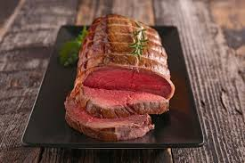
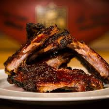
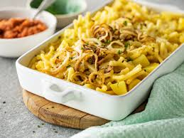
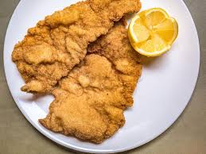

| Menü links | Menü rechts |
|---|---|

Interessanter Text über Lasagne |

Interessanter Text über Braten |

Interessanter Text über Bolognese |

Interessanter Text über BBQ Rippchen |

Interessanter Text über Carbonara |

Interessanter Text über Steak |
|

Interessanter Text über Älplermagronen |

Interessanter Text über Schnitzel |